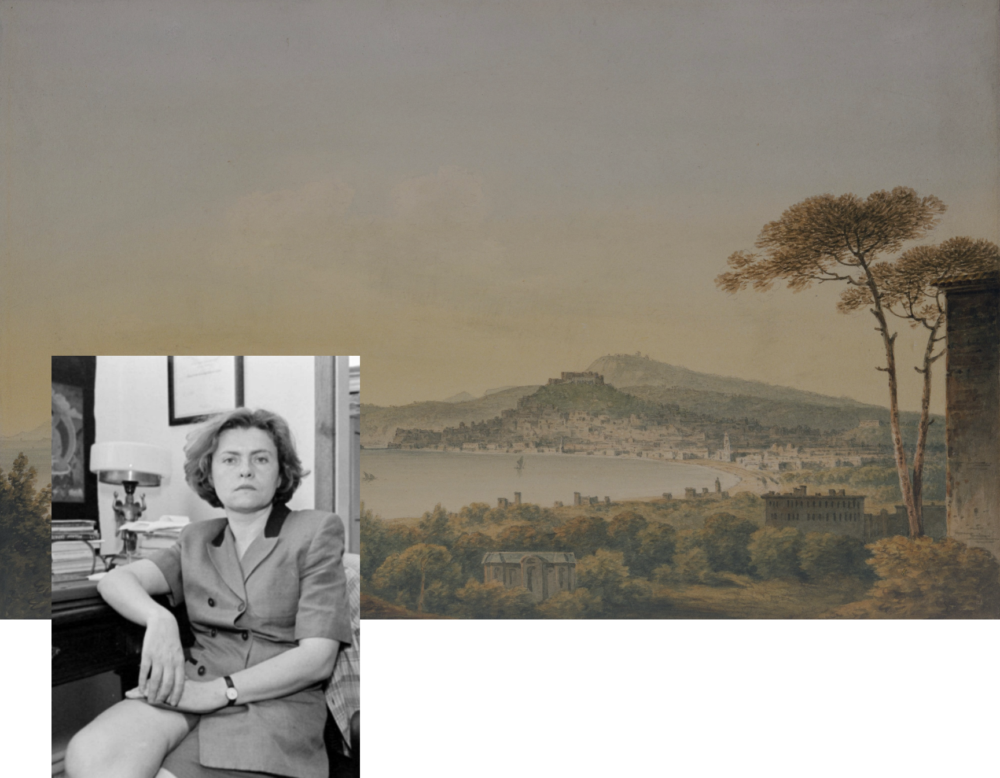

Соломія
Павличко
Українська письменниця, літературознавиця, перекладачка, публіцистка, авторка праць із теорії літератури та історії фемінізму.
Біографія

Моменти, що формують

Соломія Дмитрівна Павличко - народилася 15 грудня 1958 року у Львові, у сім'ї українського письменника Дмитра Павличка та Богдани Павличко. Перші роки проживала у Львові, у 1965 році разом із сім'єю переїхала до Києва. З дитинства багато читала, особливо книжки з батькової бібліотеки, серед яких було багато привезених з Америки.
Навчалася на відділенні романо-германських мов і літератури Київського державного університету імені Тараса Шевченка (1981). У 1984 році захистила кандидатську дисертацію з американської літератури на тему «Філософська поезія американського романтизму. З 1985 року Соломія Павличко працювала в Інституті літератури НАНУ, спочатку у відділі зарубіжної літератури, потім — теорії літератури.
Викладала у Шевченківському інституті й в Києво-Могилянській академії. У 1992 році заснувала видавництво «Основи», яке перше почало видавати українською європейських модерних мислителів, від Карла Поппера до Сімони де Бовуар. У 1995 році захистила докторську дисертацію на тему «Теоретичний дискурс українського модернізму» під керівництвом Кіри Шахової.
У 1987
Згодом
Перший шлюб: Михайло Загребельний розлучилася восени 1990 року. 1987 року народила доньку Богдану. Роксолана Павличко, молодша сестра Соломії, оформила опікунство після смерті Соломії, коли дівчинці було 12 років.
Другий шлюб з канадським істориком і політологом Богданом Кравченком, який виховував Дану(друга донька Соломії) після смерті матері.
Однією з перших в Україні вона заговорила про фемінізм і зібрала довкола себе жінок-однодумиць, модерних, цікавих, елегантних. І спростувала стереотип про фатальну неспроможність такої жінки в особистому житті.
Соломія Павличко — визнана авторка праць з історії фемінізму.
Започаткувала в Україні видання феміністичної літератури, займалася ідеєю партнерської рівноправної сім'ї.
31 грудня 1999 року
Взяла участь у телепередачі «Сніданку з 1+1», а ввечері вдома, унаслідок отруєння чадним газом від несправного бойлера, втратила свідомість і захлинулась у ванній у 41-річному віці. Похорон Соломії Павличко з численною участю громади відбувся в Києві на Байковому кладовищі 4 січня 2000 року.

«Фемінізм мене цікавить як наукове та інтелектуальне явище. Мене цікавить фемінізм і як ключ до прочитання літературних явищ. Постановка проблеми не нова. Після „Другої статі“ Сімони де Бовуар такі речі апробовуються уже сорок років, і я просто застосовую деякі з тих метод до української літератури. Але я не роблю це механістично, не приходжу до якогось автора і не кажу: так, ось зараз я робитиму феміністичний аналіз. Аналіз диктується текстом, тим паче, сьогодні він може бути лише багатогранним, коли фемінізм поєднується з психоаналізом, деконструкцією тощо. Наскільки я є феміністкою в житті? Думаю, повною мірою. Я вже розказувала, як мене було виховано. Це було справжнє феміністичне виховання, коли батьки тобі кажуть: ти повністю повинна розраховувати на власні сили — ніякі заміжжя, ніякі мужчини, ніякі сторонні люди — тільки ти сама можеш зробити себе щасливою. І я так і стараюся жити і сподіваюся, що моя дочка буде жити так само.»


Основні роботи
★"Дискурс модернізму в українській літературі"
Це одна з найважливіших монографій Павличко, де вона досліджує явище модернізму в українській літературі кінця ХІХ — початку ХХ століття. Вона аналізує творчість таких авторів, як Леся Українка, Ольга Кобилянська, Михайло Коцюбинський та інші, з акцентом на їхні модерністські пошуки та гендерні аспекти. У книзі авторка розкриває проблематику патріархального дискурсу в літературі та його вплив на авторок і їхню творчість.
★ Есеї та статті про гендер і культуру
Соломія Павличко писала численні статті, де аналізувала гендерні аспекти в літературі, роль жінок у суспільстві та культурі. Її роботи стали основою для розвитку гендерних студій в Україні. Вона підкреслювала потребу критичного переосмислення традиційних уявлень про роль жінок у літературному процесі.
★"Теорія літератури"(у співавторстві)
Цей посібник став одним із перших в Україні, що вводив студентів і науковців у сучасну теорію літератури. Павличко пояснювала ключові концепти літературознавства, зокрема постмодернізм, деконструкцію, інтертекстуальність, надаючи приклади їх застосування на матеріалі української літератури.
★ "Фемінізм"
У книжці вперше зібрано статті, дослідження, бесіди та інтерв’ю 1990-х років відомого літературознавця Соломії Павличко, присвячені проблемам фемінізму в суспільному житті та літературному дискурсі. Деякі з поміщених тут публікацій виголошувалися на міжнародних конференціях: «Фемінізм і націоналізм» (Торонто, 1991), «Фемінізм як можливий підхід до аналізу української культури» (Ілінойс, 1991), «Виклик стереотипам: нові жіночі голоси в українській літературі 90-х» (Інсбрук, 1997).